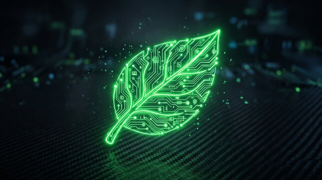
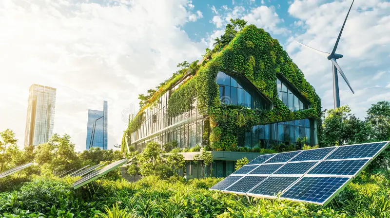
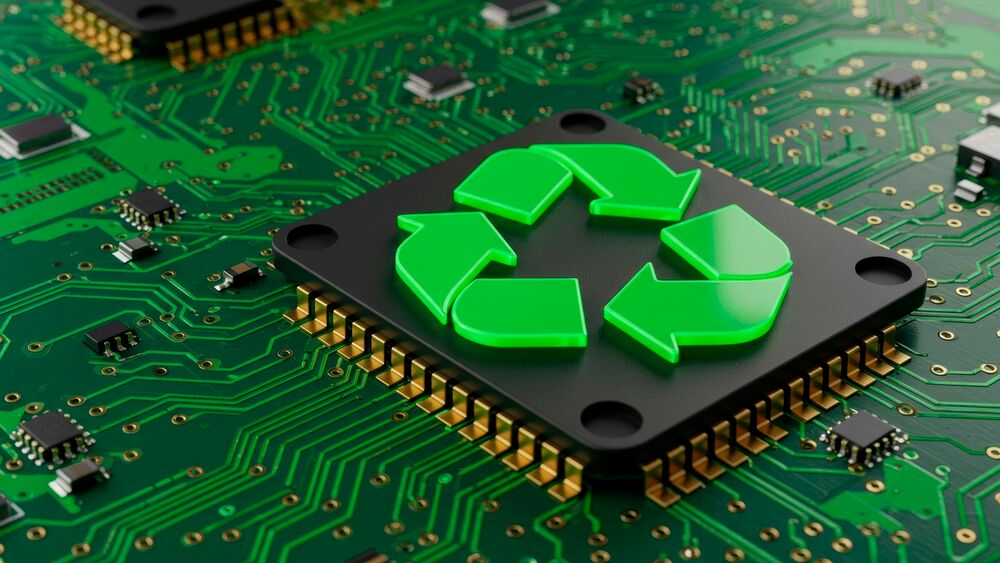

Bem vindo ao site!
Aqui, nós exploramos como a inovação e o respeito ao meio ambiente podem caminhar juntos. Descubra como escolhas tecnológicas conscientes desde o descarte correto de lixo eletrônico até o uso de softwares ecoeficientes podem reduzir nossa pegada de carbono e transformar o futuro do planeta. Conecte-se com ideias, práticas e soluções para uma tecnologia mais verde e responsável.



O que será mostrado?
- Guia de Descarte Correto: Aprenda onde e como reciclar seus aparelhos eletrônicos antigos sem agredir a natureza.
- Tecnologias Verdes (Green Tech): Conheça as inovações, gadgets e empresas que estão liderando a transição para um ecossistema digital sustentável.
- Hábitos Digitais Conscientes: Dicas simples para o seu dia a dia, como reduzir o consumo de energia dos seus aparelhos e limpar seu lixo digital.
Tecnologias e como elas podem ser sustentáveis
A tecnologia pode ser uma grande aliada da preservação ambiental quando é desenvolvida e utilizada de maneira responsável. Por meio de novas invenções, é possível economizar recursos naturais, diminuir a poluição e encontrar soluções para problemas ambientais. Um exemplo é o uso de painéis solares, que transformam a luz do sol em energia elétrica. Também existem sistemas inteligentes que controlam o consumo de água, equipamentos que economizam eletricidade e máquinas que facilitam a reciclagem de resíduos. Além disso, tecnologias como satélites e drones ajudam a monitorar florestas, identificar queimadas e acompanhar mudanças no meio ambiente.
Energias renováveis e seus benefícios
As energias renováveis são aquelas obtidas de fontes naturais que se renovam constantemente, como o sol, o vento e a água. Elas são importantes porque ajudam a diminuir a dependência de combustíveis fósseis e podem reduzir a emissão de gases responsáveis pelo aquecimento global. A energia solar utiliza a luz do sol para produzir eletricidade, enquanto a energia eólica aproveita a força dos ventos. Já a energia hidrelétrica utiliza o movimento da água para gerar energia. Essas alternativas representam um passo importante para um futuro mais sustentável, embora também precisem ser planejadas para evitar impactos ambientais.
Como podemos utilizar a tecnologia de maneira consciente?
O uso consciente da tecnologia começa com pequenas atitudes do dia a dia. Evitar trocar aparelhos eletrônicos sem necessidade, desligar equipamentos que não estão sendo utilizados e encaminhar corretamente os eletrônicos antigos para reciclagem são exemplos de práticas sustentáveis. Também é importante valorizar empresas que adotam processos de fabricação responsáveis, utilizam materiais recicláveis e desenvolvem produtos com maior durabilidade. A sustentabilidade não depende apenas de grandes invenções, mas também das escolhas que fazemos diariamente.
/*Pode colocar inumeros títulos e parágrafos que já organiza sozinho, isso vale para todos */